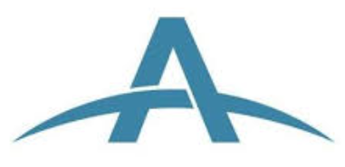
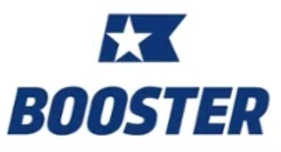

I'm an experienced professional with a demonstrated history of versatility and growth. Over my 8+ year career with Booster, I sharpened my event coordination, public speaking and fundraising skills. My current role has me learning and growing skills in project management via web development and database managment.
Work Experience
💻

Atlas Technical Consultants
Project Coordinator | Duluth, GA
February 2022 - Present
Manage databases for our Project Managers using SQL
Coordinate with local governments and Georgia Department of Transportation (GDOT) to execute agreeements
Develop training curriculum to educate team members on data management
GAJ Productions
Founder | Atlanta, GA
July 2022 - Present
180+ public speaking engagements
8+ years of wedding events and DJ experiences
Produced songs for companies to use in their promotional materials and business initiatives
Implemented our website to generage leads and drive growth
Gravy
Account Manager | Atlanta, GA
Jun 2021 - Oct 2021
Responsible for 54 Client Relationships
Coordinator and delegator between internal teams based on proactive initiative and client feedback
Deliver insights on payment trends and recovery rate to offer consultation for strategic decisions
Performance metrics include increased Net Return Revenue (NRR), upsells and client renewal
Implementation Specialist | Atlanta, GA
Nov 2020 - May 2021
Onboarded and implemented new clients through exceptional customer service
Intimate knowledge of payment processors and customer relationship management systems
Led data science initiatives to gain insight for our clients
Provided efficiency-boosting techniques in the payment saving process

Booster Enterprises
Talent Acquisition Specialist | Atlanta, GA
February 2020 - July 2020
Passionately partnered with academic institutions and talent organizations to deliver on company needs for top talent
Leveraged LinkedIn to find top talent
Interviewed candidates for open positions nationwide
Developed prospecting plan to build professional networks
Program Training Specialist | Atlanta, GA
May 2015 - September 2019
Responsible for curriculum development of training for all of Booster’s client-facing employees
Specialized in instructional design and implementation of learning management systems for company learning initiatives
Facilitation of training workshops and franchise workforce development
Hosted regional and company-wide training for corporate leadership meetings
Directed and managed company soundtrack projects
Program Leader | Charlotte, NC
August 2012 - May 2015
Responsible for coordination of over $1,000,000 raised for local education
Retained 100% of clients and exceeded financial projections by 11%
Led school-wide experiences to promote fitness, fundraising and character for K-5 students
Specialized in professional written & verbal communication, public speaking, team leadership and cultivating professional relationships
Education
📝
Clemson University
Management - Bachelors of Science: 2007-2012
Willard High School
2002-2006
Skills
🎨
Web Development
HTML
Python
SQL
Music Production
Specialize in composition, mixing and mastering
Logic Pro X
Vocal Recording and Podcasts
Microsoft Platforms
Access
Excel
Outlook
Word
PowerPoint
Google Workspace
Docebo Learning Management Software
Salesforce
DocuSign
10+ years of Public Speaking
8+ years as a wedding emcee
8+ years of professional DJ services
Awards
🥇
"Encourage the Heart" winner - Q2 2021
Enthusiasm Value winner - August 2019
Employee of the Month - July 2017
Outstanding Customer Service Award winner - Q4 2016
Hobbies
🥇
Husband & Father
Married to Emily since Feb '22
My son Grayson James was born Sept '23
Music Creation & Production
Piano
Guitar
DJing and Mixing
Reloop Mixon 4
Pioneer FLX 10
Traktor S4
Volunteering
High School Youth Group Leader
Travel
Napa, CA and Las Vegas, NV are my recent favorites!
Golf
Fitness
Competed in the Rock n' Roll 10k in Phoenix, AZ in January '23